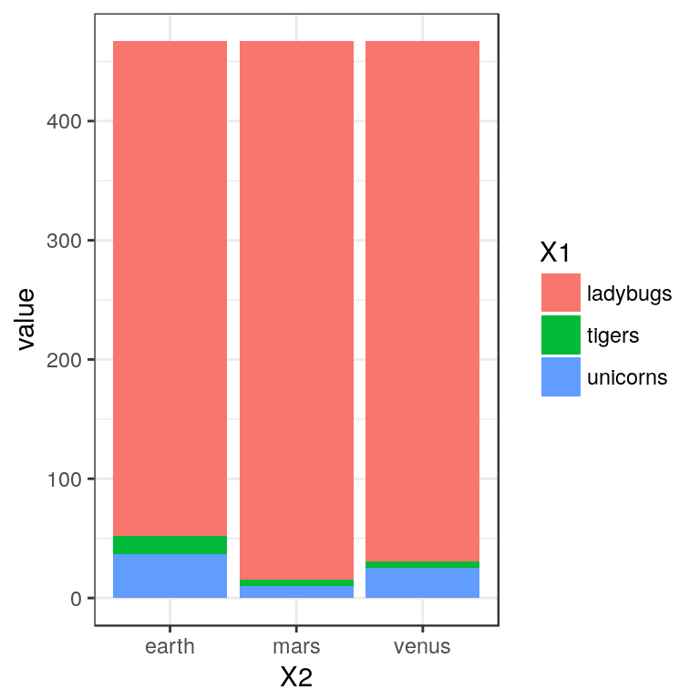
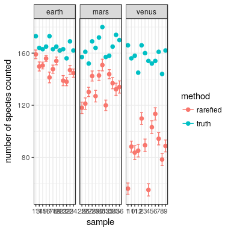
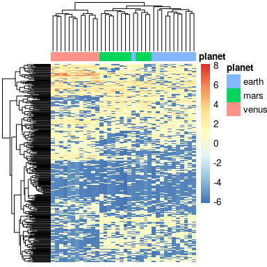

Analysis of compositional data
Emanuel Heitlinger
2018-02-14
Analysis of compositional count data
(e.g. in microbiomes or transcriptomes)
Standard analyses of abundance estimates genereated from sequencing treat the generated data as counts. Methods for differential abundance estimation in RNAseq data have probably recieved most attention in this regard (see e.g. this for one of the current approaches). Many (if not all) of the methods developed for analyses of count data derived from transcriptomes are also applied to amplicon sequencing data. On the other hand techniques from classical community ecolgy are applied on data from transcriptomics or amplicon sequencing alike (mostly after transforming it to count data).
In the field of amplicon sequencing there are currently concernes that analysis of “compositional data” as counts can introduce biases (e.g. reviewd here, refering in its core to Aitchison, J. (1986)).
This document aims to give an introduction to the challenges that are posed by compositional data produced to assess transcriptomes via RNAseq or microbiomes via amplicon sequencing. I will give an “abstract” introduction into:
- pecularities of “compositional count data” from sequencing,
and show
- how analyses of community ecology (try to) deal with these (or not).
The main purpose is to discuss with the audience how concepts in community ecology and data analyses are affected by the nature of sequencing data and I want to discuss
- whether it is even conceptually possible to address these issues using generic solutions.
This is distributed and “developed” as a package to ease further expansion and contribution.
So what is this “compositional data”?
Imagine you would count animals in two different ecosystems (e.g. on mars, earth and venus) but at the end forget your overall count. What you keep is just the relative proporion of tigers, unicorns and ladybugs.
Why should such a strange thing happen?
When sequencing DNA fragments, we sample a pool of molecules. We usually lack the information on the number of entities (organisms or transcripts) this pool of molecues was generated from (but see this as a counter example).
To illustrate we start to simulate some count data (strongly inspired by DESeq2::makeExampleDESeqDataSet)
library(reshape)
## initialize the random number generator (-> reproducibility)
set.seed(1209)
n <- 3 ## number of rows
m <- 3 ## number of columns
means <- c(8, 28, 330) ## per row (species) mean
countData <- matrix(rnbinom(m * n, mu = means, size = 10),
ncol = m)
colnames(countData) <- c("venus", "earth", "mars")
rownames(countData) <- c("tigers", "unicorns", "ladybugs")
ggplot(melt(countData),
aes(x=X2, y=value, fill=X1)) +
geom_col()These values (given how we simulated them) could now be the actual counts of our animals on those planets. The problem is: when sequencing we don’t know. PCRs in the preparation of libraries (collections of DNA molecules) perserve the relative proportions of different molecules (say those from tigers, unicorns and ladybugs) but provide no information on the number before amplification.
In addition, our sampling of the finally produced molecules usually varies in depth (that is sequencing depth varies). A usual first step in all analyses is to account for this variation in sampling depths. Standard (presented below) methods don’t consider the compositional nature of sequencing data when dong so.
depth <- c(1, 0.1, 0.5) ## per column (planet) depth
mu <- as.matrix(means)%*%t(as.matrix(depth))
countData <- matrix(rnbinom(m * n, mu = mu, size = 10),
ncol = m)
colnames(countData) <- c("venus", "earth", "mars")
rownames(countData) <- c("tigers", "unicorns", "ladybugs")
ggplot(melt(countData),
aes(x=X2, y=value, fill=X1)) +
geom_col()Scaling by totals (1)
The simplest method to adjust for the depth of sequencing is to scale by the number of total reads per sample.
scaling.factor <- colSums(countData)/max(colSums(countData))
ggplot(melt(t(t(countData)*1/scaling.factor)),
aes(x=X2, y=value, fill=X1)) +
geom_col()
Interlude: A more realistic dataset
We now adjust a couple of things in our dataset to make it more realistic:
We add more species (rows, could also be genes in trascriptomics)
We add more samples (columns) and also specify them as replicates for our differnt ecosystmes (could be tissues or treatments in transcriptomics)
Differences between ecosystems
We make the dispersion (negative binomial parameter, a.k.a. parameter of the gamma distribution describing the variation in the poisson paramter of a composite poisson-gamma) vary with the mean of the count for a species.
library(pheatmap)
n <- 300 ## number of rows (species)
m <- 36 ## number of columns (samples)
## the relationship between mean and dispersion
dispMeanRel <- function(x) 4/x + 0.1
## low mean and high standard deviation to get sparse counts (lots of
## zeros)
interceptMean <- 0.1
interceptSD <- 2
## the depth as influenced by our sequencing
## depth <- runif(m, min=0.4, max=1)
## for now assume we have even depths
depth <- rep(1, times=m)
## beta will be the mean of the negative binomial it is here still on
## the log scale we make two more columns wich give a deviation from
## our intercept SD (see below)
beta <- cbind(rnorm(n, interceptMean, interceptSD),
rnorm(n, 0, 1),
rnorm(n, 0, 2))
## the sample different ecosystems
colData <- data.frame(planet =
factor(rep(c("venus", "earth", "mars"),
each = m/3)))
rownames(colData) <- paste(colData$planet, 1:m, sep="_")
## a model matrix telling us which sample belongs to which condition
planet.design <- stats::model.matrix.default(~colData$planet)
## the final sample means based on design, log-means and the depth of
## sequencing. By matrix multiplication mars gets
mu <- t(2^(planet.design %*% t(beta)) * depth)
## the dispersion via the mean relationship
dispersion <- dispMeanRel(2^(beta[, 1]))
## and based of on these the negative binomial counts
countData <- matrix(rnbinom(m * n, mu = mu, size = dispersion),
ncol = m)
## we now remove species for which we have only zero counts (we
## wouldn't have this in a real dataset)
countData <- countData[rowSums(countData)>0, ]
colnames(countData) <- rownames(colData)
rownames(countData) <- paste("species", 1:nrow(countData), sep="_")
pheatmap(log10(countData+1),
annotation_col=colData,
show_rownames=FALSE,
show_colnames=FALSE)
I aimed for a simulation of a dataset which resembles more amplicon sequencing as compred to RNAseq. These datasets are usually sparse, meaning many species have in many samples zero counts. Mean values of a negative binomial distribution for individual species are themselfs normally distributed. These mean values are low but have a high variance. To differenciate the different ecosystems I used differences in the mean which are normally distibuted with a mean of zero.
Scaling by totals (2, slightly more realistic data)
ColS <- data.frame(sample.sum=colSums(countData), num=1:ncol(countData),
planet=colData$planet)
ggplot(ColS, aes(x=reorder(num, sample.sum), y=sample.sum, fill=planet))+
geom_bar(stat = "identity")
scaling.factor <- colSums(countData)/max(colSums(countData))
countData.scaled <- t(t(countData)*1/scaling.factor)
pheatmap(log10(countData.scaled+1),
annotation_col=colData,
show_rownames=FALSE,
show_colnames=FALSE)This lead to a dataset in which the total number of animals varied a lot. A situation which should be challenging when the data is “normalized”.
Interestingly, scaleing by totals seems to screw us over here. We did not include sequencing depth differnences in this simulation, so we know we wouldn’t have needed to scale. But annoyingly the sequencing process itself (or to be more exact the PCR) does “scale” for us. In real data we don’t know all of this and we have to correct for the differences in sequencing depths.
Rarefaction
What if we wanted to estimate species richness? For any kind of basic species count or for the richness indices we need to correct for our observation effort!
This means we need to sub-sample every sample to the number of sequencing reads we obtained for the least deeply assessed sample we want to include. We do this repeatedly to get an estimate of the variance this induces.
We use a the vegan function to perform this rarefication. Ecologists traditionally have put the species in the columns and sites in the rows, probably as they had more sites than spcies. We have in most cases more species than sites and do it the other way round (at least I do).
library(vegan)
#> Loading required package: permute
#> Loading required package: lattice
#> This is vegan 2.4-6
countData.rare <- lapply(1:100, function (i){
t(rrarefy(t(countData),
sample=min(ColS$sample.sum)))
})
pheatmap(log10(countData.rare[[1]]+1),
annotation_col=colData,
show_rownames=FALSE,
show_colnames=FALSE)
richness <- lapply(countData.rare, function(y){
apply(y, 2, function(x) length(x[x>0]))
})
rich.mat <- matrix(unlist(richness), nrow=m)
richness <- data.frame(planet=colData$planet,
richness.mean=rowMeans(rich.mat),
richness.sd=apply(rich.mat, 1, sd),
n=1:nrow(rich.mat))
ggplot(richness, aes(as.character(n), richness.mean)) +
geom_point(size=2) +
geom_errorbar(aes(ymin=richness.mean-richness.sd,
ymax=richness.mean+richness.sd))+
facet_wrap(~planet, scales="free_x")
Uh, we are screwed again!
Using totals based scaling as offset for modelling
library(DESeq2)
mode(countData) <- "integer"
rowRanges <- GRanges("1", IRanges(start = (1:nrow(countData) - 1) * 100 + 1,
width = 100))
dds <- DESeqDataSetFromMatrix(countData = countData, colData = colData,
design = ~planet, rowRanges = rowRanges,
ignoreRank = TRUE)
dds <- estimateSizeFactors(dds, type="poscounts")
dds <- estimateDispersions(dds)
#> gene-wise dispersion estimates
#> mean-dispersion relationship
#> -- note: fitType='parametric', but the dispersion trend was not well captured by the
#> function: y = a/x + b, and a local regression fit was automatically substituted.
#> specify fitType='local' or 'mean' to avoid this message next time.
#> final dispersion estimates
dds <- nbinomLRT(dds, reduced= ~1)
res.deseq <- results(dds)
head(res.deseq[order(res.deseq$padj), ])
#> log2 fold change (MLE): planet venus vs earth
#> LRT p-value: '~ planet' vs '~ 1'
#> DataFrame with 6 rows and 6 columns
#> baseMean log2FoldChange lfcSE stat pvalue
#> <numeric> <numeric> <numeric> <numeric> <numeric>
#> species_213 94.702455 5.857367 0.6183568 142.25641 1.286512e-31
#> species_28 3.072630 4.375525 0.6857651 105.53118 1.213936e-23
#> species_21 5.300482 3.474154 0.5985473 72.24978 2.047194e-16
#> species_55 7.374460 3.088628 0.5440076 70.40334 5.153587e-16
#> species_74 4.125340 -4.206402 0.7922348 65.15906 7.093993e-15
#> species_237 8.332600 3.240092 0.5555765 64.47082 1.000783e-14
#> padj
#> <numeric>
#> species_213 3.293471e-29
#> species_28 1.553838e-21
#> species_21 1.746939e-14
#> species_55 3.298295e-14
#> species_74 3.632124e-13
#> species_237 4.270006e-13
table(res.deseq$padj<0.01)
#>
#> FALSE TRUE
#> 150 106Techniques acknowleding compositionality
Classical testing for differential abundance
Centered log-ratio (clr) transformation offer an alternative (see here).
library(ALDEx2)
g.mean <- function (x, na.rm=TRUE){
exp(sum(log(x[x > 0]), na.rm=na.rm) / length(x))
}
countData.clr <- apply(countData, 2, function(x){
log(x+0.0001/g.mean(x+0.0001))
})
pheatmap(countData.clr,
annotation_col=colData,
show_rownames=FALSE,
show_colnames=FALSE)
countData.clrP <- aldex.clr(countData,
conds=as.character(colData$planet))
#> [1] "operating in serial mode"
#> [1] "computing center with all features"
res.aldex <- aldex.glm(countData.clrP, conditions=colData$planet)
#> [1] "operating in serial mode"
#> [1] "running tests for each MC instance:"
#> |------------(25%)----------(50%)----------(75%)----------|
The problem here is that the neither the geometric mean nor the log can be calculated for zero-count samples. After our naive solution (adding a small number) we used a package which “converts the single estimate to a probability vector”. This uses Monte-Carlo sampling from the Dirichlet distribution (ref).
res <- merge(res.aldex, as.data.frame(res.deseq), by=0)
ggplot(res, aes(glm.eBH, padj)) +
geom_point() +
scale_y_log10() +
scale_x_log10()
#> Warning: Removed 41 rows containing missing values (geom_point).The p-values from very established negative-binomial glm (using scaling as an offset parameter) are highly corrlated. The compositional approach is a bit more conservative in the multiple-testing adjusted p-values.